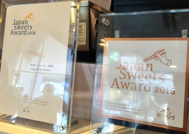
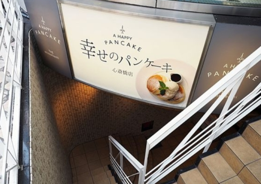
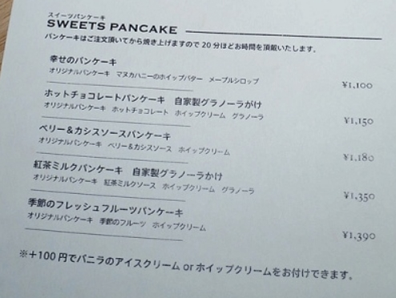
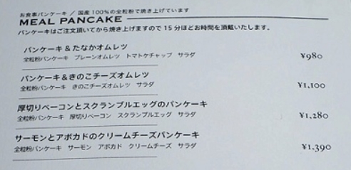
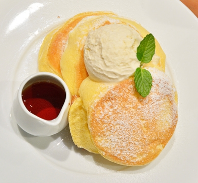
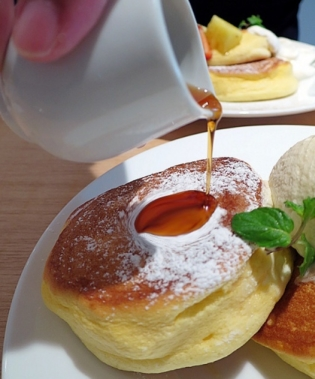
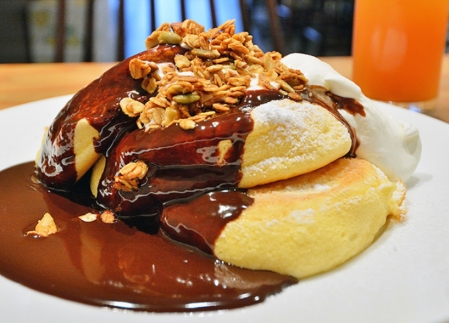
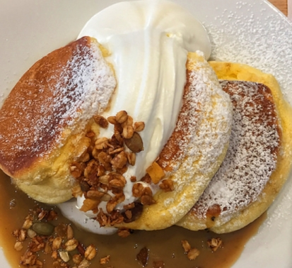
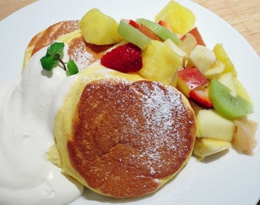
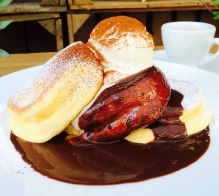

日本超人氣鬆餅 心齌橋店 [官網]
營業時間: 10:00~20:00
現點現做20分鐘
2016全日本甜點 Top 50


甜的有5種口味
(原味, 巧克力, 莓果黑醋栗, 紅茶牛奶醬, 季節水果)

鹹的有4種口味
(歐姆蛋, 起司歐姆蛋, 厚切培根+炒蛋, 煙燻鮭魚+酪梨)

+200升級為飲料套餐, 可選:
咖啡 コーヒー (ICE/HOT)
紅茶 (ICE/HOT)
橙汁 オレンジジュース
薑汁啤酒 ジンジャーエール
可樂 コーラ
幸せのパンケーキ 1100 推
(上頭是紐西蘭 manuka 蜂蜜奶油)

單吃, 搭配蜂蜜奶油, 淋上楓糖漿都可以

巧克力 ホットチョコレートパンケーキ 1180

紅茶牛奶醬 紅茶ミルクパンケーキ 自家製グラノーラソースがけ 1350

季節水果 季節のフレッシュフルーツパンケーキ 1390

提拉米蘇 ティラミスパンケーキ 1480
